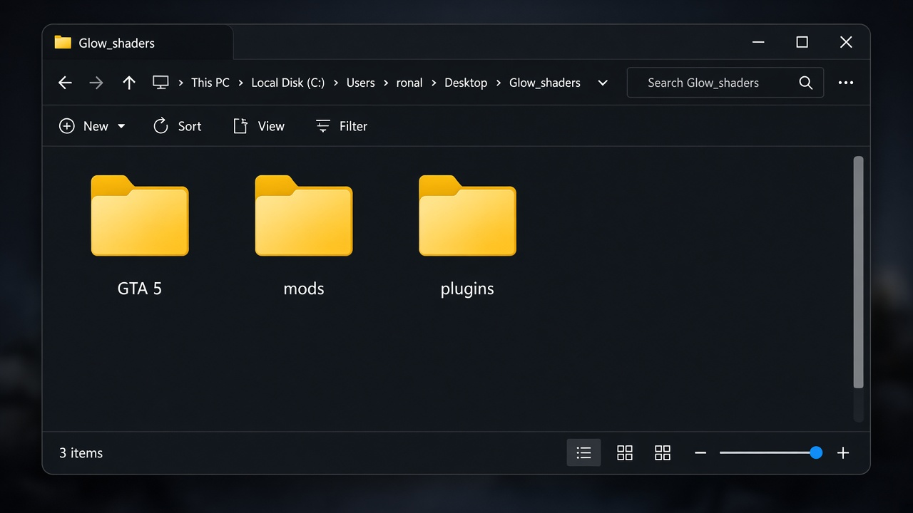
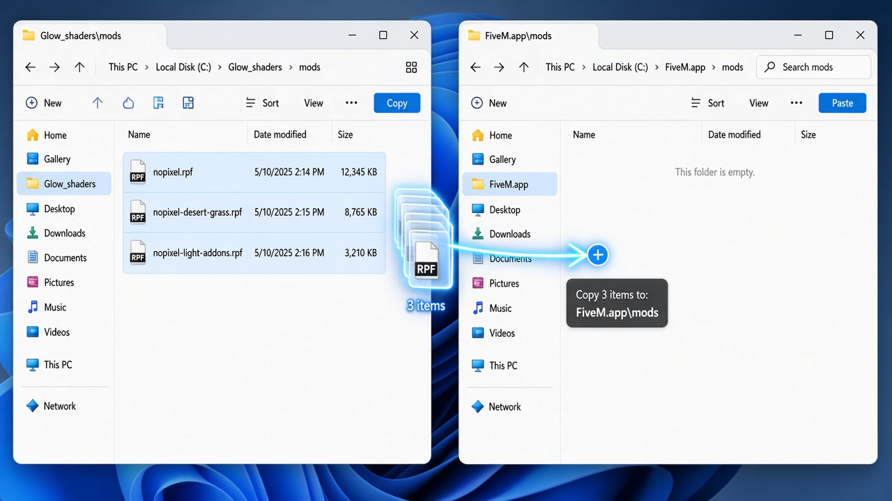
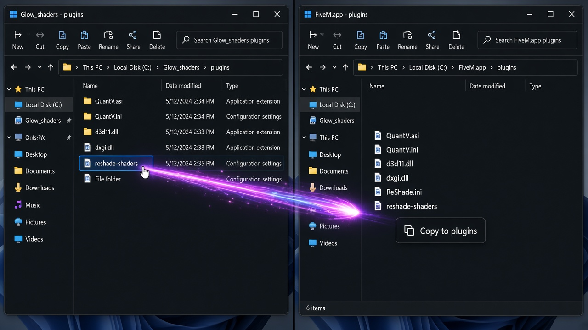
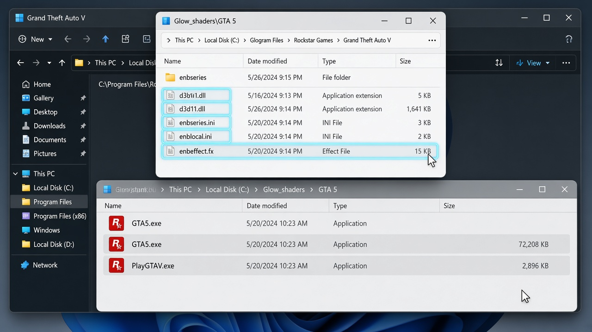

plugins
ReShade, QuantV, and shader files. Drop these into FiveM.

This pack has two destinations. Plugins and mods go into FiveM AppData. ENB files go into your GTA V game folder.
Extract Glow_shaders.rar to your Desktop. You should see these three folders. Each one goes to a different place.
ReShade, QuantV, and shader files. Drop these into FiveM.
The .rpf visual files. Drop these into FiveM.
ENB files. Drop these into your real GTA V folder. Not FiveM.

Glow_shaders.rar and extract it.GTA 5, mods, and plugins.FiveM.app. That is the folder you want.%localappdata%\FiveM\FiveM.app
Open FiveM folder for me
Click the button, then Run the helper. File Explorer opens on your real FiveM.app folder — not a Run box.


Inside FiveM.app you will already see two folders:
modspluginsThose are the only two FiveM folders you need. Do not drop the ENB files here.
mods.nopixel.rpf
nopixel-desert-grass.rpf
nopixel-light-addons.rpf
FiveM.app\mods.

plugins.reshade-shaders, QuantV.asi, d3d11.dll, and the ReShade ini files.FiveM.app\plugins.Copy the files inside plugins, not the whole FiveM.app folder.
C:\Program Files\Rockstar Games\Grand Theft Auto V
Open GTA V folder for me
This finds your real install and opens File Explorer with GTA5.exe selected.
GTA 5.enbseries, d3d11.dll, enbseries.ini, and the .fx files.GTA5.exe.These ENB files go in the real GTA V game folder. They do not go in FiveM AppData.

mods, not GTA V.GTA5.exe, not into FiveM.d3d11.dll files. One is for FiveM plugins, one is for GTA V ENB.